"Accessibility is HARD!!!"
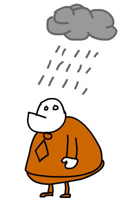"Here you go. Support the WCAG!"
"Accessibility was a nightmare on our previous project..."

"The average user loves our website!!!"
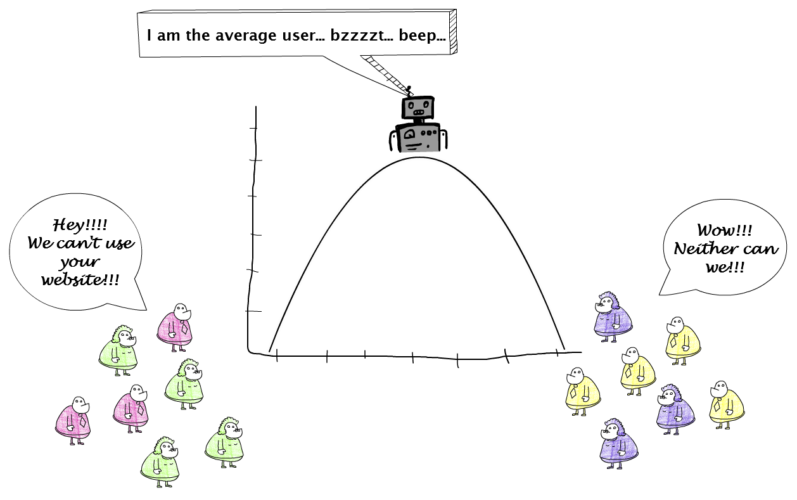"But my HTML works!"
Enter text here
"I already have enough work!!!"

"Who are the disabled?"
One in six people in the European Union (EU) has a disability that ranges from mild to severe making around 80 million who are often prevented from taking part fully in society and the economy because of environmental and attitudinal barriers. For people with disabilities the rate of poverty is 70% higher than the average partly due to limited access to employment. - European Commission
What types of disabilities are there?

What would your future self say?
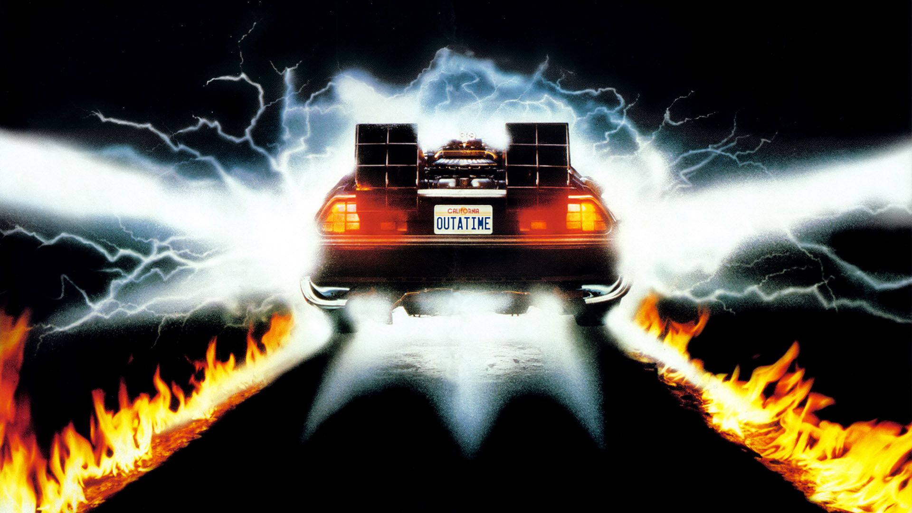Over a third of people aged over 75 have disabilities that restrict them to some extent, and over 20% are considerably restricted. Furthermore, these numbers are set to rise as the EU's population ages. - European Commission
Did you know that accessible HTML is also better for search engines?
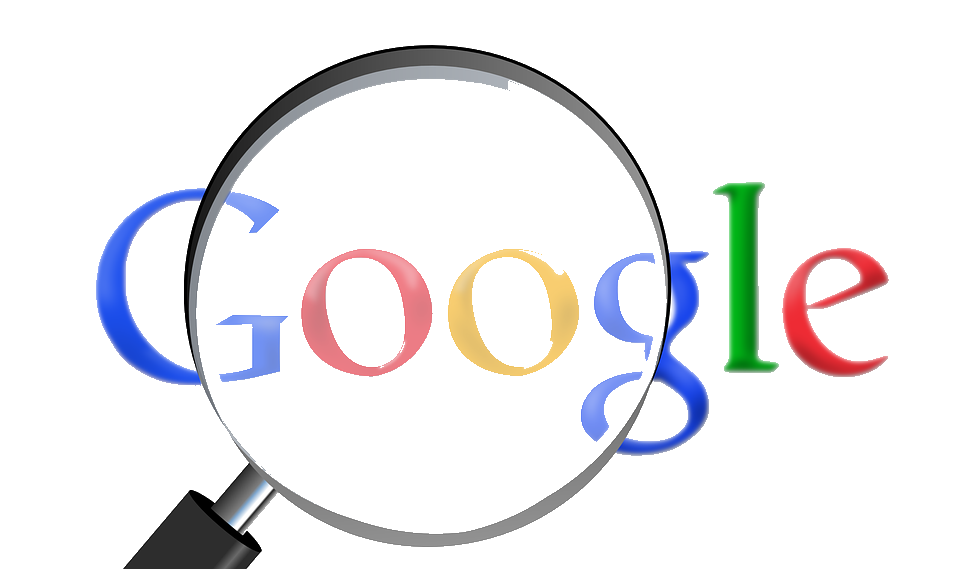What if I told you that it's only perceived to be hard?
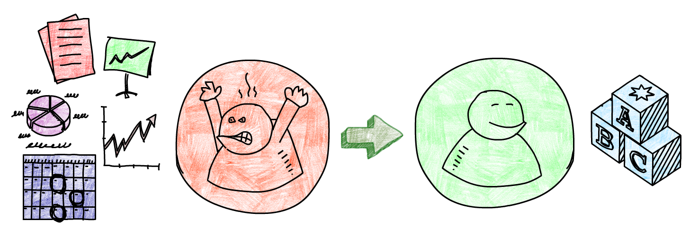Who wouldn't be able to use this input screen?
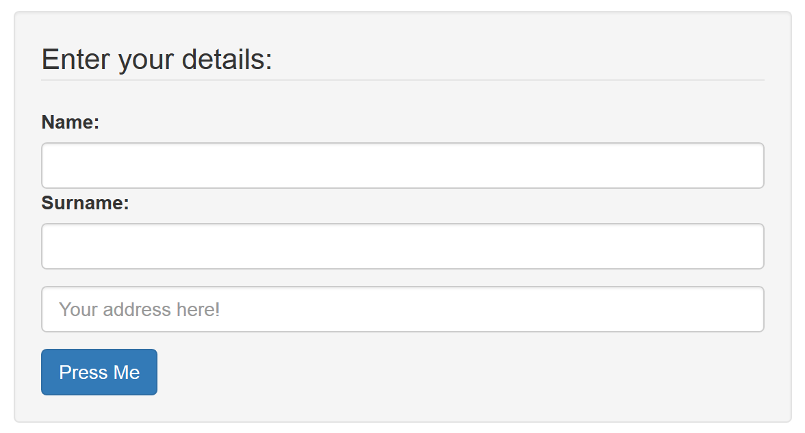Let's try it with a screen reader...
It's a dumpster fire!

Let's recap!
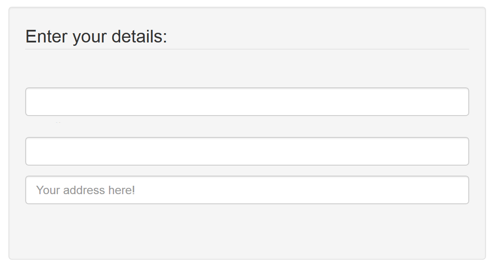Don't lose focus.
//The cardinal sin
:focus {
outline: 0;
}
Every time you neglect to label a control a fairy drops down dead.
//Implicit labelling
//Explicit labelling
//ARIA labelling
If it walks like a duck and quacks like a duck it must be... urm... a button?
//All the power of JavaScript and you make a DIV clickable?
Press Me
//How about just...
Your HTML is as strong as its weakest link.
//Anchors are for navigation!
Go to the company details.
Go to the company details.
//Aaaaah that's better...
Go to the company details.
Button it! Link it!
//Buttons are for actions
//Anchors are for navigation!
Go to the company details.
Don't leave people out of the picture.

Let's apply some of the new things we learnt.
Now we speak HTML!
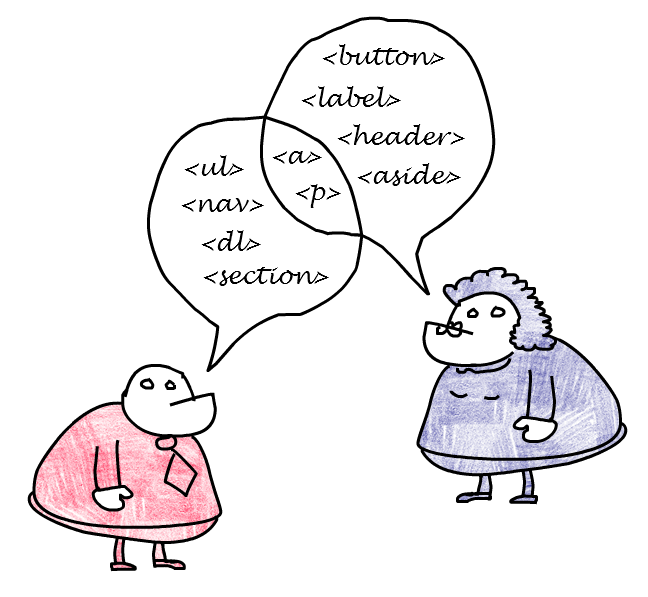And ARIA is your second dialect...
https://www.w3.org/WAI/intro/ariaOne more thing... Pokemon NO!
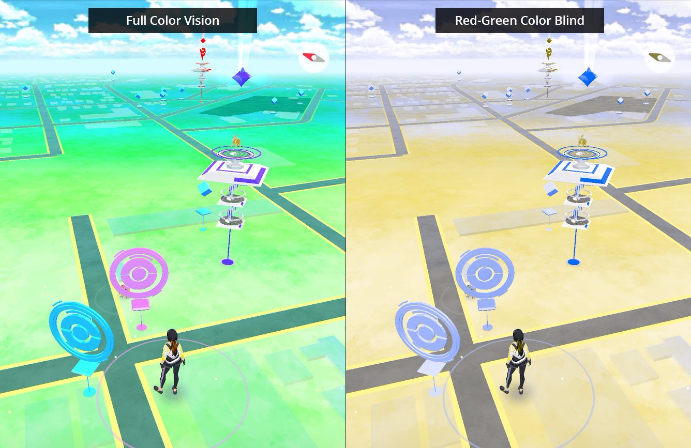Seeing it once is better than being told 100 times. - Chinese proverb
Plug out your mouse!
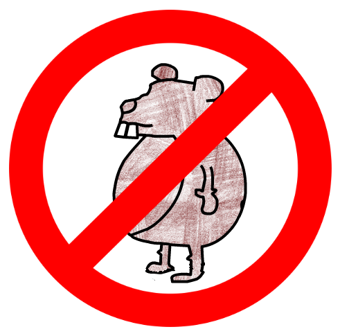Chrome accessibility inspector.

Safari accessibility inspector.
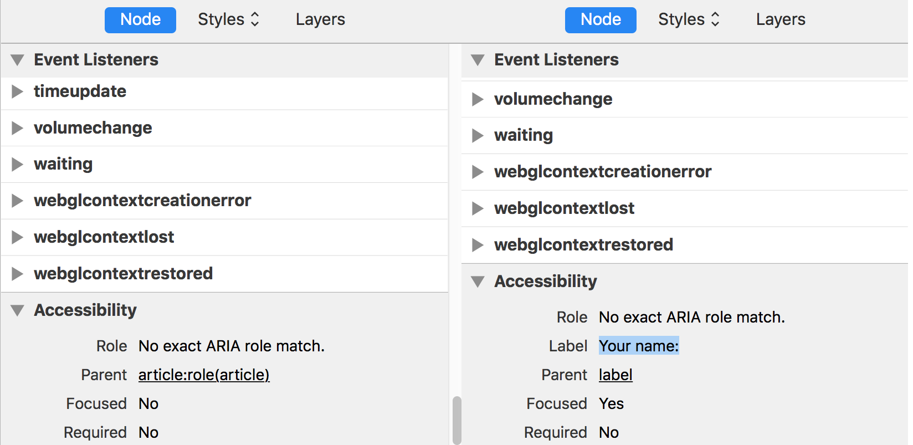aXe your accessibility issues!
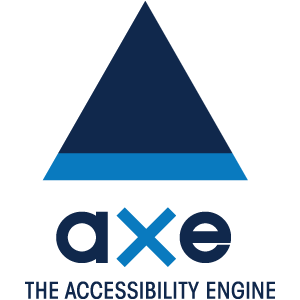WAVE away your issues.
Visualising contrast.
Colour contrast analyser.
Simulate visual disabilities.
NoCoffee Vision Simulator
The screen reader.
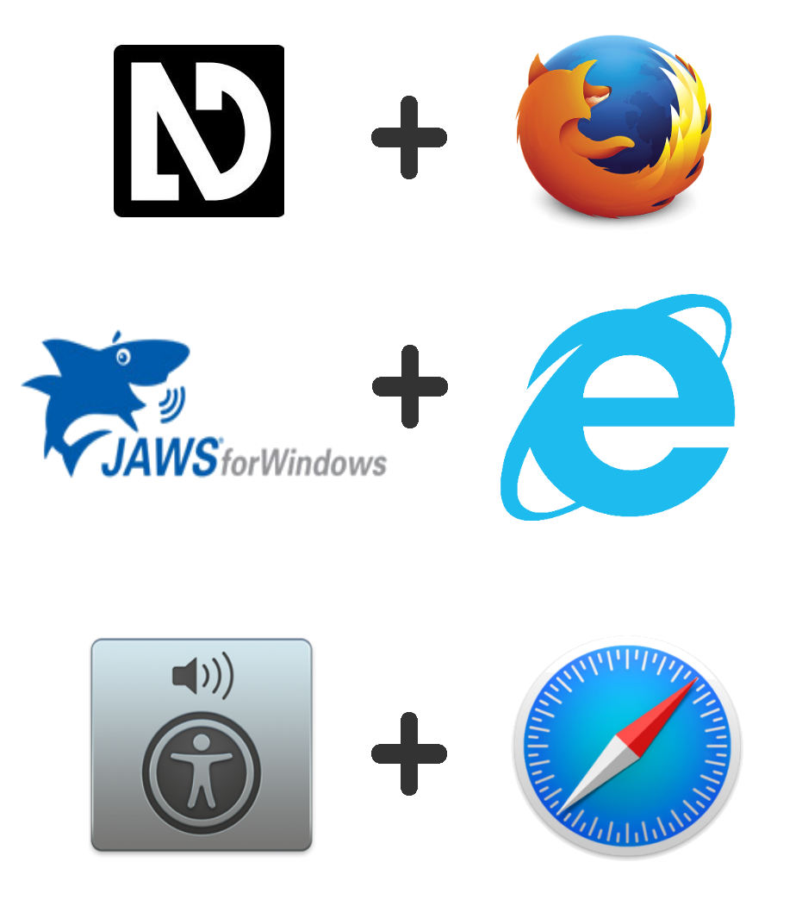Do it right from the start.
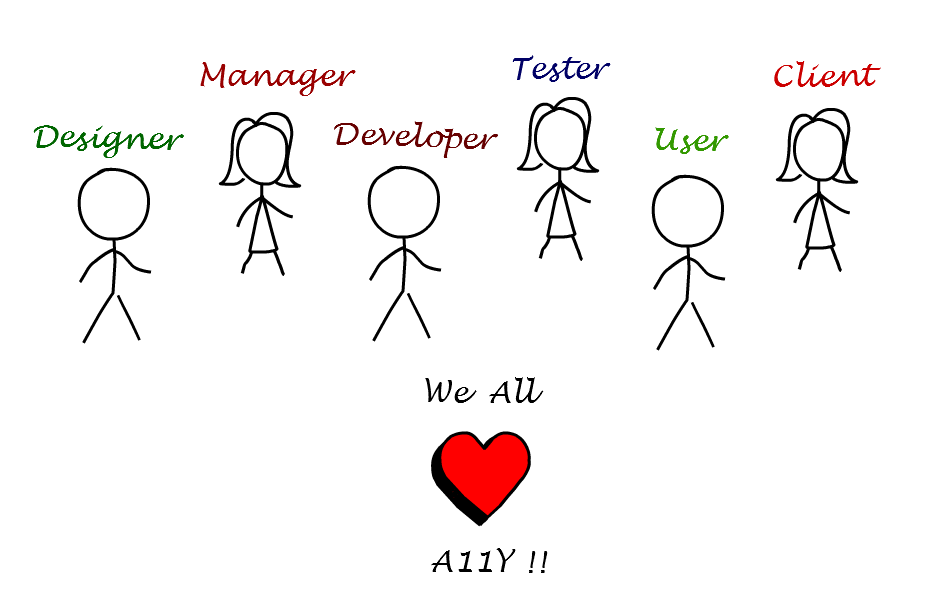No man is an island.
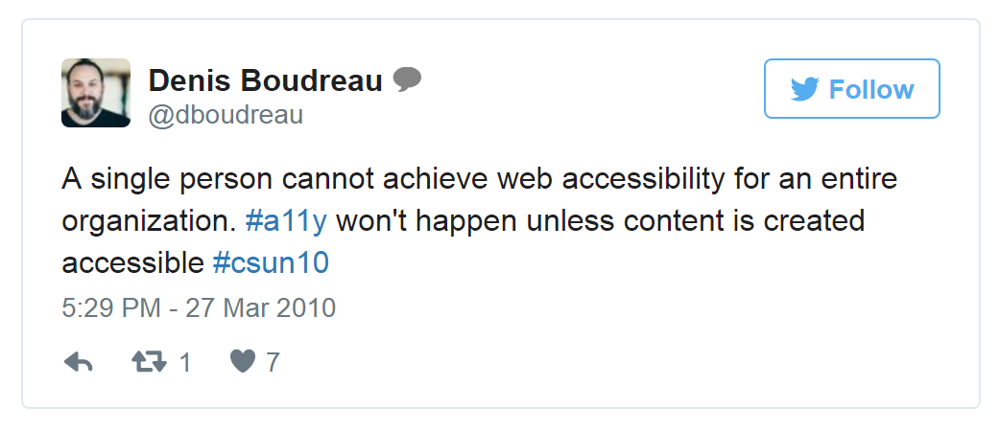Inclusive design vs. good looking design.

But I can't operate it at all with a keyboard! ¯\_(ツ)_/¯
Remember those internal websites!
The people in your company are... PEOPLE!
Helpful links
http://a11yproject.com/http://webaim.org/
https://www.w3.org/TR/wai-aria-practices-1.1/
Accessibility is easy!